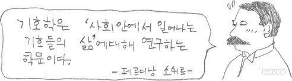
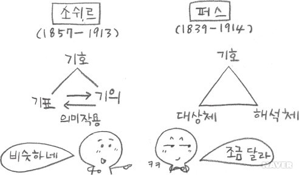
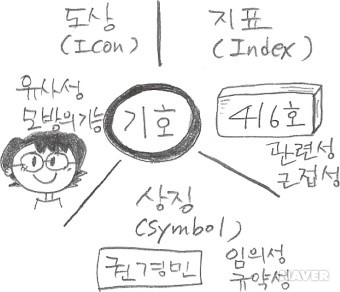
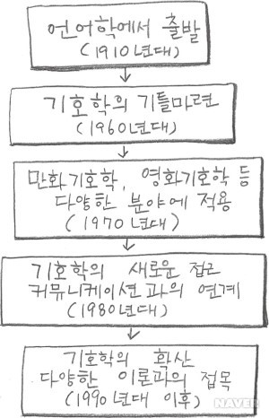

우리는 만화를 감상할 때 만화가에 의해 창조된 세상을 경험한다. 그 세상은 온통 만화가에 의해 만들어진 기호로 이루어져있는데, 만화의 세상이 아닌 실제 우리들의 삶 역시 기호와 밀접하게 연결되어 있다. 20세기 초 기호학의 창시자인 스위스의 언어학자 페르디낭 소쉬르(1857~1913)는 20세기 이론과 철학에 강력한 영향력을 행사했다. 소쉬르는 특정언어가 역사적으로 어떻게 발전해 왔는지 보다는 언어의 구조와 체계에 더 관심이 있었다. 그는 단어들이 선천적인 의미를 갖는 게 아니라 그 단어에 대한 생각을 가리킨다는 사실에 주목했다.
예를 들어, ‘소’라는 단어는 ‘소의 본질적인 속성’을 가리키는 게 아니라 우리가 ‘소에 대해 갖는 생각’을 가리키므로, ‘소’는 그런 생각을 갖는 다른 단어 ‘cow’, ‘牛’ 등으로 전혀 다르게 표현할 수 있는 것이다. 소쉬르에 의하면, 인간이 의도하여 생성한 기호는 기표(Signifier)와 기의(Signified)로 구성된다. 기표는 이미지나 표시, 단어 등을 가리키고 기의는 기호가 가리키는 사물이나 개념, 대상, 감정 등을 말하는데, 이때 의미로서의 소를 ‘기의’라고 하고 글자로서의 소는 ‘기표’라고 할 수 있다. ‘의미화’는 기호를 만들기 위해 기표와 기의를 묶는 과정을 말 한다.
소쉬르와 비슷한 시기에 미국의 철학자 C.S.퍼스(1839~1914)도 유사한 생각을 했는데, 서로 완전히 독자적인 연구임에도 불구하고 이론의 골자는 근본적인 유사성을 갖고 있다. 그는 기호는 대상체(Object)와 해석체(Interpretant)로 이루어진다고 하며, 비인위적인 것, 자연적인 기호체계까지 기호에 폭넓게 포함시켰다. 또한, 퍼스는 기호의 작용방식을 세 가지 도상(icon), 지표(index), 상징(symbol)으로 나눌 수 있다고 했다. 도상은 초상화나 지도처럼 기호가 나타내고자 하는 대상과 닮은 경우, 즉 유사성이 있으며, 지표는 도로표지판, 교복, 발자국처럼 기호가 나타내고자 하는 것과 관계가 있는 경우, 즉 인과성, 또는 관련성이 있는 것을 가리킨다. 상징은 단어, 숫자, 국기처럼 유사성이나 관련성은 없지만 자의적으로 만들어진 기호를 말한다. 따라서 작가의 의도에 따라 그려진 만화 속 이미지들, 그림문자 등도 역시 퍼스가 주장한 기호의 작용방식에 따라 구분지을 수 있다.
기호학의 관점에서 만화를 읽는다는 것은 만화를 구성하는 모든 요소들을 해석하는 대상으로 보는 것을 말한다. 또한, 감상적으로 어느 한 순간의 직관에 따라 작품을 지각하는 것이 아니라 해석하는 입장에서 객관적인 맥락으로 만화를 보는 것이다.
기호학의 전통은 20세기 초 소쉬르에 의해 창시되었지만, 오랫동안 주목받지 못하다가 새로운 연구방법에 대한 관심이 높아진 1960년대부터 학문으로서 본격적인 출발을 하였다. 당시 기호를 해석하고 형태와 구조를 분석하기 위한 과학적인 연구방법론이 요구되었는데 이런 시대적 흐름속에서 기호학이 주목을 받게 되었다.
1970년대에 들어서면서 우리 생활은 TV, 비디오, 사진, 광고 등이 일반화되었고, 그에 따른 이미지와 시각적 요소들에 대한 중요성이 대두되었다. 이러한 시대적 분위기는 기호학이 보편화되는 과정에 중요한 역할을 하였는데, 예술작품 역시 감상만 하던 수준에서 한걸음 나아가 분석을 통해 객관적으로 이해해보려는 시도가 나타났다. 영화, 사진, 음악 등의 다른 예술분야와 만화기호학이란 학문적 모습을 갖추고 본격적으로 연구되기 시작했다. 만화기호학은 만화에 표현된 선과 색, 형태와 이미지, 개념이 어떻게 작품을 이루어내는지 생각하는 방법을 제시하며, 작품구조 분석 및 해체를 통해 만화가 어떻게 작용하는가에 대한 해답을 얻는 학문이다.
하지만, 1970년대 지적 호기심을 충족시키면서 새로운 학문으로 급부상한 기호학은 큰 과오를 저지르게 되는데, 초기 기호학자들의 대부분이 예술작품의 형식을 설명하는 일에 너무나 치중한 나머지 전 시대 학자들이 지켜온 종교관과 세계관의 차원에서 발견했던 의미론적 체계를 충분히 이해하지 않고 형식만을 논하는 실수를 범하게 된다. 당시의 기호학자들은 작품해석이 작품을 둘러싸고 있는 지적, 심리적, 사회적 약호뿐만 아니라 수용자의 정신을 이루고 있는 여러 약호들이 상호작용하여 이루어진다는 것을 깨닫지 못했던 것이다.
1980년대와 1990년대에는 컴퓨터의 발전과 인터넷 사용이 증가하면서 커뮤니케이션 문제가 대중의 관심을 받게 되었다. 대화에서도 담화 상황과 맥락에 대한 인식이 커졌으며, 다른 문화 사이의 커뮤니케이션, 문화상호 연관성이 중요시되었다. 만화기호학에서도 만화를 둘러싼 시공간적 조건, 작품이 태어난 환경, 발화내용이 이루어지는 환경, 법적, 계급적, 성적, 경제적 구조 등과 같은 컨텍스트(Context)가 주목받으며 만화 연구에 있어서도 컨텍스트를 고려한 독서방식이 제시되었다.
1980~90년대를 거치면서 정보교환 자율화 시대, 세계화 시대라는 현대사회의 흐름을 반영하게 된다. 대부분의 분야의 연구가 독자중심으로 옮겨오면서 독자가 텍스트를 수용하는 조건에 따라 변할 수 있는 해석 가능성이나 작품 내에서 커뮤니케이션 상황의 흔적을 찾아내는 방식에 더 관심을 쏟게 되었다. 1990년대의 만화기호학은 기호학적 시각으로 만화를 연구하는 다양한 논문들이 발표되었으며, 서로 다른 연구방법론을 통합하여 효과적으로 텍스트를 이해하는 방식이 도모되었다.
